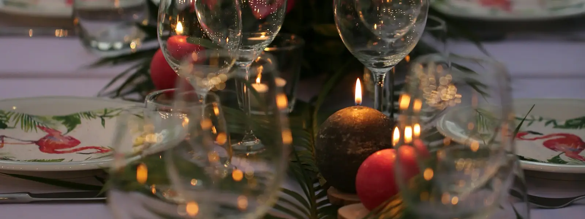
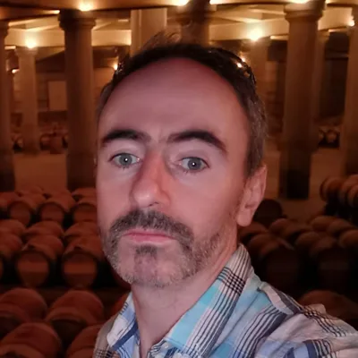
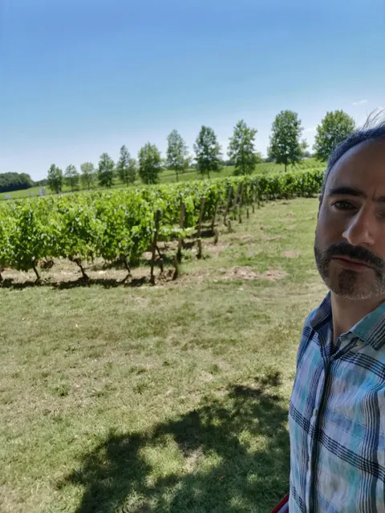
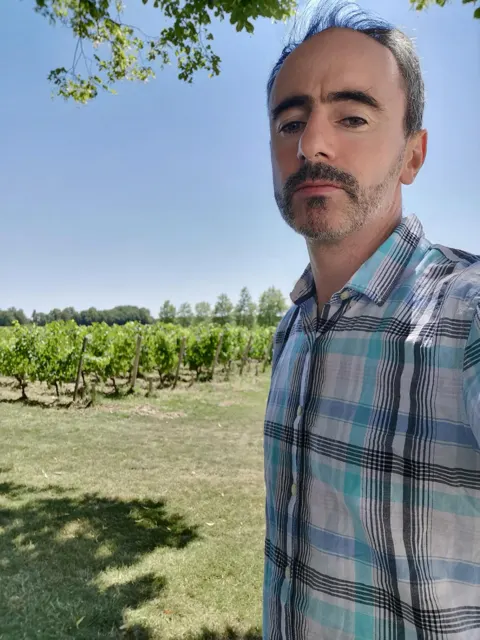
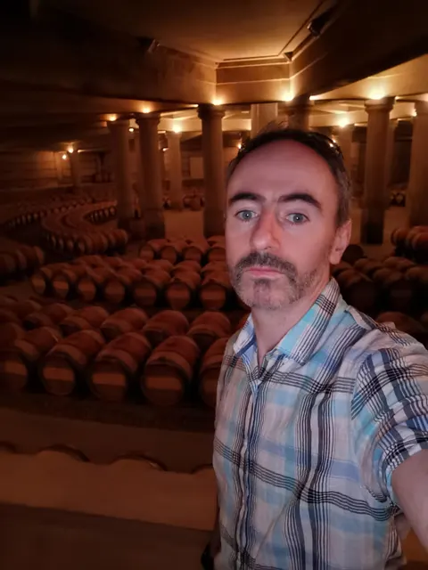
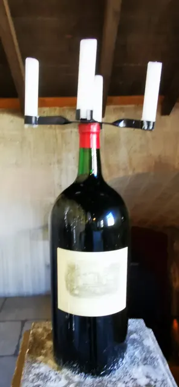
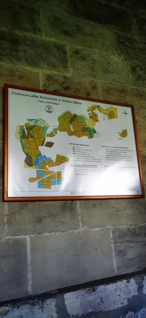
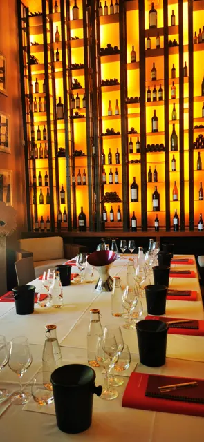
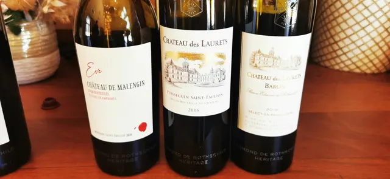
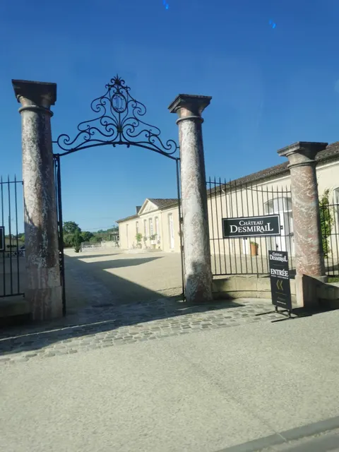

Home › About
About The Wine Reference
The Wine Reference is a free, independent guide to wine, spirits and cocktails, written and maintained by Diego Muntoni, head of bars and beverage in London, WSET Diploma holder and Graham's Port Ambassador.
What the guide covers
221 grape varieties, 200 wine regions with a map, 782 wines in The Wine Library, 252 food and wine pairings, 79 classic cocktails, 51 spirit regions, a daily wine story, a wine history timeline, an A–Z glossary and guides for anyone building a career as a sommelier.
How it is written
Every grape, region and wine is checked against official appellation bodies, producers' own websites and respected wine publications, and written in our own words. Wines are real bottles from established producers; recipes are links to their original authors. Corrections are always welcome through the contact page.


Diego Muntoni
This guide brings together wine grapes, regions, tasting tools and study material for wine lovers and aspiring sommeliers.
When I can, I go to the vineyards to see where the wines come from. Photos and notes from those visits are in Wine trips below, starting with Bordeaux in 2022.
Qualifications
- 2016WSET Level 4 Diploma in Wines and Spirits
- 2014Court of Master Sommeliers: Intermediate and Certified Sommelier (March 2014)
- 2011WSET Level 3 Advanced Certificate in Wines and Spirits
- 2011Winner of the Porters & Laker scholarship to complete the WSET Diploma, awarded to the top 1% of students
- 2010WSET Level 2 Intermediate Certificate in Wines and Spirits
- 2004WSET Level 2 Professional Certificate in Spirits
In the press
- 2021Stir: Hosting an English wine and cheese masterclass at OXO Tower with Digby and Neal's Yard Dairy
- 2019Wine List Confidential: Sommelier profile of Diego and the OXO Tower wine list, including its Coravin selection
- 2018Crummbs: Review of the English wine–paired tasting menu created with chef Jeremy Bloor
- 2018The Handbook: English wine takes centre stage at OXO Tower: six dishes paired with six English wines
- 2018The Drinks Business: Wine List Confidential: OXO Tower, from bartender to sommelier leading a team of eight
- 2015HELLO! magazine: English Wine Week: five of the best English wines, with Diego's picks
- 2012Foodepedia: 'Waters of Life': Glenmorangie whiskies paired with desserts at OXO Tower
- Luxury Restaurant Guide: OXO Tower Restaurant guide, featuring the wine list
- Star Wine List: OXO Tower Restaurant's wine team
What you'll find here
Grapes and regions
Grape profiles, wine regions by country, subregions, producers and maps.
Tasting tools
A step-by-step tasting grid with printable and shareable sheets.
Study and careers
Quizzes, a glossary, a vintage chart and career resources for sommeliers.
Wine trips
Visits to vineyards, cellars and tasting rooms, with photos and videos from each trip.
Douro, 2025
Early morning on 1 October 2025 at Graham's Quinta dos Malvedos, with the mist lifting off the Douro and the first sun on the terraces.
Malvedos has been the cornerstone of Graham's Vintage Ports since the family bought it in 1890. It sits on the north bank of the river, where the Cima Corgo meets the Douro Superior, with south-facing slopes of schist and dry-stone terraces built by hand in the 18th century. As a Graham's Port Ambassador, it was special to stand where those wines begin. To read more, see the Douro Valley and Touriga Nacional.
Bordeaux, 2022
A trip to the Left Bank of Bordeaux to visit two of Pauillac's First Growths from the 1855 classification, Château Mouton Rothschild and Château Lafite Rothschild, along with a tasting from Edmond de Rothschild Heritage and a drive through Margaux.
At Mouton I walked the vineyards. At Lafite the highlight was the circular barrel cellar, where the barrels sit in rings around a forest of columns, and a soil map that shows why this gravel is so good for Cabernet Sauvignon. The Edmond de Rothschild Heritage tasting, in a room lined with back-lit bottles, crossed to the Right Bank, with wines from the Saint-Émilion satellites Montagne and Puisseguin. If you want to read more, see Bordeaux and Cabernet Sauvignon.








The Wine Reference newsletter
New wines, stories and career guides, one email a week at most.
Over 18s only. Unsubscribe any time with one click. Your email is stored securely by Kit and never shared.
Support The Wine Reference
This guide is free, with no paywall. If it helped you choose a bottle, you can buy me a glass and keep it growing.
🍷 Buy me a glass